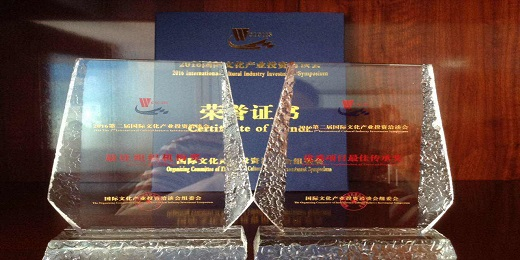
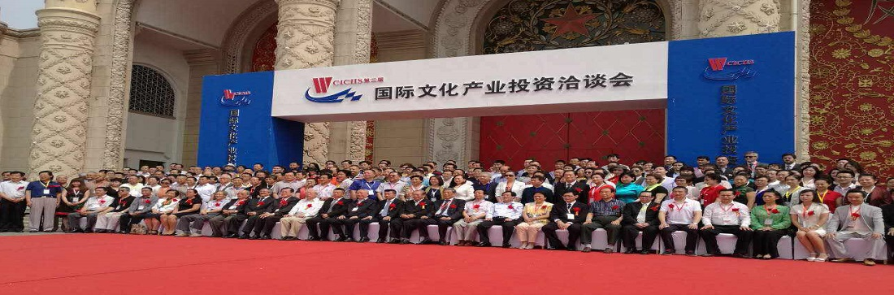
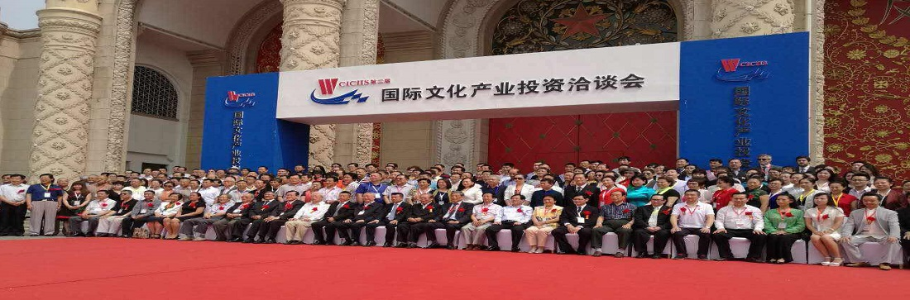

北京大健康生活生物科技有限公司是一家专注于提供健康产品及健康服务的高科技公司，公司的产品涵盖营养食品、健康酒、健康茶、健康医疗、智能器械、健康培训、健康讲座服务和健康产业投融资,是基于线上线下共赢服务的大型的健康生活综合性电商平台。

-
经营理念
为弘扬祖国深厚的文化养生传统理念，发展现代养生保健科技事业,大健康生活生物科技有限公司秉承“靠品质打造信誉、用真诚捍卫健康”的经营理念，以提供优质的产品与服务来提升人民健康生活品质为目标,将健康管理、养生理念和服务融于一体，为客户提供全面高端的健康养生管理服务，共同打造全民大健康生活平台。
图片介绍
-
发展目标
大健康理念致力于提高民众健康素养，提供民众科学的健康指导并树立正确的健康养生消费理念，提高人们的“生命质量”。本公司倡导一种健康的生活方式，不仅是‘治病’，更是‘治未病’；大健康生活生物科技有限公司消除亚健康、提高大众的身体素质，提供全民健康养生产品，打造呵护健康、预防疾病的新健康模式。

运营模式
公司设有董事会、财务部、综合管理部、网络运营部、市场营销部、招商事业部，每个部门都各尽其职，紧密的相互配合。公司主要通过线上推广与线下渠道营销并行的运营模式，深入打造全民大健康生活平台；公司自运行以来，以温馨舒适的工作环境、科学规范的管理制度、健康养生的服务理念，以适应市场竞争为导向，全面引进现代企业管理机制，认真规范企业内部管理，充分发挥每个员工的优势特长，不断地增强企业的综合实力。
团队介绍
公司拥有完整的、专业的运营推广团队，商务拓展团队及技术服务团队，优中选优，目前已与多类商品厂商，微商，代理商签订了长期合作协议病入驻加盟平台，已给多家企业及个人带来丰厚的经济利益。随着生活水平的不断提高，人们对生活质量的追求日益增加，健康养生将成为人类生存的主流，也将成为一种个人及中小企业新型创业模式。大健康生活生物科技有限公司凭借丰富的运营经验和优质的产品及服务，为您提供全面的健康养生产品，引领全民大健康生活。 
公司设有董事会、财务部、综合管理部、网络运营部、市场营销部、招商事业部，每个部门都各尽其职，紧密的相互配合。公司主要通过线上推广与线下渠道营销并行的运营模式，深入打造全民大健康生活平台；公司自运行以来，以温馨舒适的工作环境、科学规范的管理制度、健康养生的服务理念，以适应市场竞争为导向，全面引进现代企业管理机制，认真规范企业内部管理，充分发挥每个员工的优势特长，不断地增强企业的综合实力。
团队介绍
公司拥有完整的、专业的运营推广团队，商务拓展团队及技术服务团队，优中选优，目前已与多类商品厂商，微商，代理商签订了长期合作协议病入驻加盟平台，已给多家企业及个人带来丰厚的经济利益。随着生活水平的不断提高，人们对生活质量的追求日益增加，健康养生将成为人类生存的主流，也将成为一种个人及中小企业新型创业模式。大健康生活生物科技有限公司凭借丰富的运营经验和优质的产品及服务，为您提供全面的健康养生产品，引领全民大健康生活。 